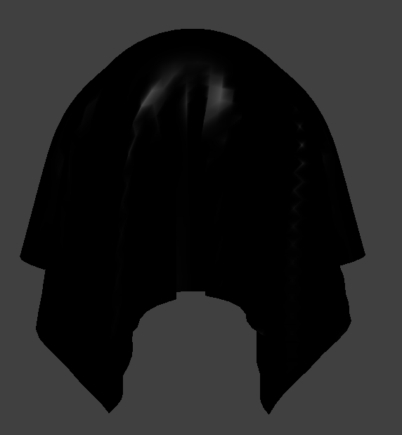
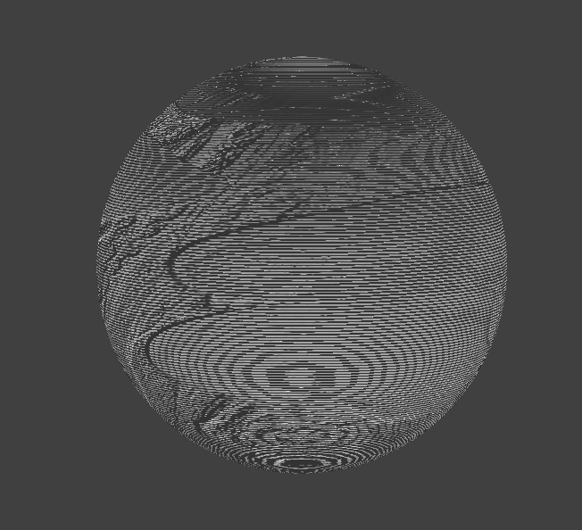

CS 184: Computer Graphics and Imaging, Spring 2024
Project 4: Cloth Simulator
Tiffany Sun, April 6, 2024
Overview
cloth :o
Part I: Masses and springs
screenshots of scene/pinned2.json
(1) without any shearing constraints
(2) with shearing constraints
(3) all constraints
Part II: Simulation via numerical integration
A higher value of 'ks' results in a stiffer cloth, as the springs connecting the cloth's particles resist deformation more strongly. Conversely, a lower 'ks' value leads to a more flexible and fluid-like cloth, as the springs offer less resistance to changes in shape. However, extremely high or low 'ks' values can lead to unstable simulations, as the cloth may oscillate rapidly or stretch excessively. Therefore, choosing an appropriate 'ks' value is crucial for achieving realistic cloth behavior.
higher value of 'ks'
lower value of 'ks'
A higher density means more mass per unit area, which results in a heavier cloth. This increased weight can lead to more pronounced sagging and slower movements due to the greater force of gravity. On the other hand, a cloth with lower density will be lighter and more susceptible to forces like wind, leading to more dynamic and swift movements. However, a very low density might make the cloth behave more like a gas than a solid material.
higher density
lower density
Damping refers to the reduction of motion over time, often due to friction or resistance. In the context of cloth simulation, a higher damping value will cause the cloth to settle more quickly and resist rapid movements, leading to a more stable but less dynamic simulation. Conversely, a lower damping value allows for more energetic and lively cloth movement, but can also lead to instability or unrealistic oscillations.
higher damping
lower damping
scene/pinned4.json
Part III: Handling collisions with other objects
Default ks = 5000
With the default ks value of 5000, the cloth drapes over the sphere in a balanced manner, showing a realistic behavior of cloth.
ks = 500
With a lower ks value of 500, the cloth appears more flexible and less resistant to deformation, leading to a more draped and fluid-like appearance.
ks = 50000
With a higher ks value of 50000, the cloth appears stiffer and more resistant to deformation. It holds its shape more rigidly and shows less draping over the sphere.
peaceful cloths
Part IV: Handling self-collisions
cloth self-collision
varying density
higher density means having more pronounced collisions due to its increased weight
lower density means having less pronounced collisions but responds more dynamically to external forces
varying ks
higher ks means having more rigid appearance due to its increased stiffness
lower ks that the springs offer less resistance to changes in shape and thus a more fluid appearance
Part V: Shaders
Shader programs typically consist of at least two parts: a vertex shader and a fragment shader. These two shaders work together to create the final visual effect.
The vertex shader operates on each vertex of the 3D object. It's responsible for transforming the 3D coordinates of these vertices into the 2D space of the screen. This process often involves operations like translation, rotation, and scaling. The vertex shader can also calculate per-vertex data, such as lighting, that will be used by the fragment shader.
The fragment shader, on the other hand, operates on each pixel that the 3D object occupies on the screen. It uses the data calculated by the vertex shader, along with its own calculations, to determine the final color of each pixel. This is where detailed effects like lighting, shadows, and material textures are typically calculated.
The Blinn-Phong shading model is a method used in computer graphics to calculate the color of a pixel based on its lighting environment and the properties of its material.
The model consists of three components: ambient, diffuse, and specular. The ambient component represents the light that is scattered uniformly in all directions. The diffuse component represents the light that is scattered in many directions due to the roughness of the surface. The specular component represents the light that is reflected in a specific direction, causing shiny highlights on the surface.
only ambient:
only diffuse:
only specular:

all three:
texture mapping shader using my own custom texture:
Bump mapping is a technique that simulates small-scale detail on surfaces by perturbing the surface normals and does not modify the actual geometry. It gives the illusion of depth on the surface but does not affect the silhouette of the object.
bump mapping on cloth and sphere:

Displacement mapping, on the other hand, is a technique that deforms the actual geometry of the object based on a texture. It creates real, tangible detail on the surface of the object and can affect the silhouette.
displacement mapping on sphere:
Comparing the two, bump mapping is less computationally expensive but can't provide the same level of realism as displacement mapping, especially when viewed from a sharp angle. Displacement mapping offers more realism but at a higher computational cost.
Coarse Mesh (-o 16 -a 16)
With a coarse mesh, the details of the texture are not well represented, and the sphere appears blocky and less realistic.
bump on -o 16 -a 16:
displacement on -o 16 -a 16:
Fine Mesh (-o 128 -a 128)
With a fine mesh, the details of the texture are well represented, and the sphere appears smooth and more realistic.